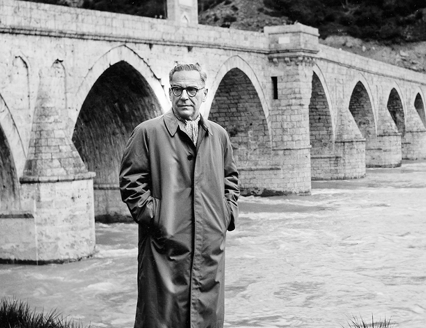

Детаљи аутора

Иво Андрић
Датум рођења: 9. октобар 1892.
Место рођења: Долац, поред Травника
Статус: Добитник Нобелове награде за књижевност (1961)
Број награда: преко 20
Број продатих примерака: милионски тиражи
Телефон менаџера: +381 11 1234567
Биографија: Један од најзначајнијих српских писаца 20. века. Његово дело обухвата романе, приповетке и есеје. Најпознатији је по роману „На Дрини ћуприја“ за који је добио Нобелову награду.
Просечна оцена: 4.8